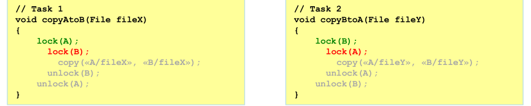
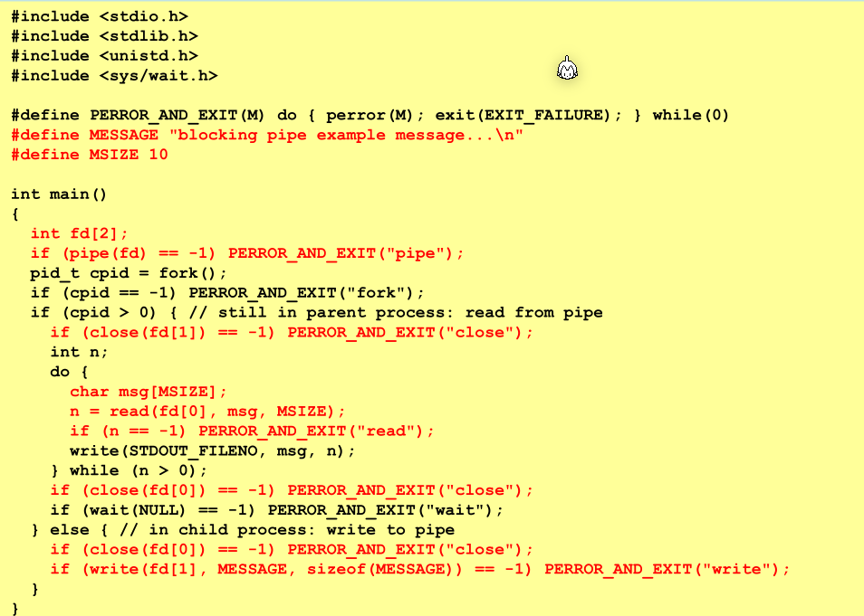

OS
Hardware

CPU
Die CPU führt die Befehle aus und ist Chef des System-Bus. Über den Bus kann die CPU auf den Speicher oder IO zugreifen.
Im PC Register (Program Counter) steht, wo in Memory die nächste Maschineninstruktion steht. In IR-Register ( Instruction Register) steht die aktuell ausgeführte Instruktion.
ALU steht für Arithmentic-Logic-Unit, welches mit Integers rechnet.
Memory
Die Memory wird über den System-Bus angesprochen.
CPU-Entlastung
- Ablaufbeschleunigung in der CPU
- Cache:beschleunigter Zugriff auf zwischengespeicherte Daten
-
Pipeline:beschleunigte Ausführung durch gestaffelte Verarbeitung
-
Arbeitsentlastung der CPU
- IC: Interrupt Controller vermitteln von Interrupts
- DMA: Direct Memory AccessDaten kopieren ohne CPU Interaktion
- FPU: Floating-Point UnitRecheneinheit für Gleitkommazahlen
- DSP: Digital Signal Processorspezielle Daten-Recheneinheit
- GPU: Graphics Processing Unit spezielle Graphik-Recheneinheit
- MPU: Memory Protection Unit Überwachung von Adresszugriffen
Modi
Im Supervisor/Kernel-Mode läuft der Kernel. So bald ein Program auf Funktionalität des Kernels zu greifen möchte, muss ein Sys-Call aufgerufen werden, welcher der Modi wechselt.
Schichten

Linux Startup

Prozess
Der Header unistd.h muss inkludiert werden.
Prozess erstellen (fork())
Mit pid_t fork() kann ein neuen Prozess erstellt werden, welche eine Kopie des aktuellen Prozess ist. Von diesem Punkt ab laufen zwei Threads den gleichen Code. Im aktuellen Prozess gibt fork() die PID des neuen Prozess zurück, im neuen Prozess wird 0 zurück gegeben.
Falls der Return Value kleiner als 0 ist, trat ein Fehler auf.
Es werden alle File Deskriptoren, Semaphoren, Signal Actions vererbt.
exec() in neuen Prozessen
execX() Funktionen ersetzt den Code in einem Thread. Dies kann zusammen mit fork() benützt werden, um ein Programm in einem neuen Thread zu starten.
int execv(char *pathname, char *argv[])Führt das Programm beipathnamemit den angegebenen Argumenten aus. Der aktuelle Code wird ersetztint system( char *command)Ist eine Helper-Method, welche mitfork()undexecv()ein neues Programm ausführt und wartet bis das Programm fertig ist. Der Return Value des Programmes wird zurückgegeben. Der angegebene Befehl wird mit/bin/shausgeführt.FILE *popen(char *command, char *type)undint pclose(FILE *stream )Funktioniert wiesystem(). Es wird der Befehlcommandin/bin/shausgeführt und ein File-Stream zurück gegeben, von welchem mitfgets(char *s, int size, FILE *stream)zugegriffen werden kann. Dertypemussrfür zum Lesen undwfür zum Schreiben enthalten
#include <stdlib.h>
#include <stdio.h>
#include <unistd.h>
#include <sys/wait.h>
int main(void) {
pid_t pid = fork();
if (pid > 0) {
wait(NULL);
} else {
// using system(...)
int exit_code = system("ls -la");
printf("child exited with %d\n\n", WEXITSTATUS(exit_code));
// using popen(...)
FILE *stream = popen("ls -la", "r");
char buffer[256];
while (fgets(buffer, 256, stream) != NULL)
printf(buffer);
exit_code = pclose(stream);
printf("child exited with %d\n\n", WEXITSTATUS(exit_code));
// using execv(...)
char *argv[] = {"ls", "-la", NULL};
if (execv("/usr/bin/ls", argv) == -1) ERROR("execv");
printf("This will never be executed\n");
}
}
wait() /waitpid() (sys/wait.h)
Nach dem ein Prozess beendet wurde, gibt es ihn noch als Zombie-Prozess bis der Parent-Prozess pid_t wait(int *wstatus) oder pid_t waitpid(pid_t pid, int *wstatus, int options) aufgerufen hat und den Status so abgeholt hat.
pid_t pid = fork();
if(pid == 0) {
int wstatus;
pid_t wpid = waitpid(pid, &wstatus, 0);
if(wpid != null) {
perror("waitpid");
exit(1);
}
printf("process %d exited with status %d (%d)\n", pid, WEXITSTATUS(wstatus), wstatus);
wait(&wstatus); // will do the same as waitpid() but with a random child-process
}
Threading
Begriffe
- Race Condition:
- Dead Lock: Zwei Threads warten auf eine Resource, welche vom anderen Thread "gelockt" wurde 
- Live Lock: Zwei Threads haben eine Resource frei gegeben und warten darauf, dass sie der andere Thread lockt
- Critical Section: Ein Stück code, in welchem nur ein Thread gleichzeitig läuft
- Starvation: ein blockierter Task kommt nie an die Reihe, da andere Tasks sich vordrängen. Dies sollte vom OS behoben werden.
volatile
Das Volatile-Keyword zwingt dem Compiler nicht zu optimieren. Somit wird wirklich ausgeführt, was in C geschrieben wurde. Ansonsten kann der Compiler Schreib-Aufrufe verschieben oder Resultate cachen. Dies ist nützlich bei Multi-Threading, da eine Variable von mehreren Threads geändert werden kann und das Cachen problematisch sein könnte.
pthread_create(...)
Mit int pthread_create(pthread_t *thread, pthread_attr_t *attr, void *(*start_routine)(void *), void *arg) kann einen neuen Thread gestartet werden.
Wenn ein neuen Thread erstellt wird, muss entweder pthread_detach() oder pthread_join()
void *worker(void *arg) {
printf("worker: hi\n");
return "Hello";
}
void main() {
pthread_t thread;
pthread_create(&thread, NULL, worker, NULL);
void *msg;
pthread_join(&thread, &msg); // pthread_join(...) wants void** as the msg
printf("Thread sent %s\n", (char*) status)
}
pthread_detach(...)
int pthread_detach(pthread_t thread) markiert ein Thread als detached und wenn ein solchen Thread sich beendet, werden die System-Resourcen automatisch freigegeben.
pthread_exit(...)
void pthread_exit(void *retval) beendet den akutellen Thread mit dem mit gegebenen Wert. Dieser kann mit int pthread_join(...) abgerufen werden. Processor-Shared-Resources, wie File-Deskriptoren, werden nicht freigegeben.
pthread_join(...)
int pthread_join(pthread_t thread, void** retval) wartet bis der angegebene Thread sich beendet. Der "Exit-Status" wird in den retval Pointer gespeichert. Die System-Resourcen des Threads werden nach dem int
pthread_join(...) zurückkehrt, frei gegeben.
IO
INode
Die Repräsentation von einem File. Es werden Daten, wie der letzte Zugriffzeitpunkt, Besitzer, Länge, physikalischer Ort auf dem Datenträger gespeichert. Aber nicht der Name der Datei.
Folder
Ein einem Ordner hats Name-INode Paare. Diese geben den INodes einen Name.
Hardlinks vs Softlink
Ein Softlink funktioniert auf dem Filesystem und sagt dem Kernel, das dieses File bei diesem Pfad gefunden wird.
Ein Hardlink ist ein "Link" auf ein INode. Es kann mehrere Namen für ein INode geben. Der INode ist erst gelöscht, wenn es keinen Namen dafür mehr gibt.
Spezielle Files
- Character Devices
- Block Devices
- Named Pipes
- Sockets
FILE*
Ein File Deskriptor, welcher auf ein File zeigt.
Folgende Funktionen sind relevant zu FILE*. Für viele Funktionen muss der Header unistd.h inkludiert werden.

Die folgenden Operationen sind die wichtigsten:
FILE* fopen(char *pathname, char* mode)Öffnet ein File zum schrieben. Falls das File nicht geöffnet werden konnte, wirdNULLzurück gegeben. Wenn fürmodefolgendes angegeben wird:`r: File nur zum lesen geöffnetr+: File wird zum lesen und schreiben geöffnetw: File wird zum lesen geöffnet. Das File wird erstellt oder überschriebenw+: Wier+, aber das File wird erstellt oder überschriebena: File wird zum schreiben am Ende der Datei geöffnet. Das File wird erstellt, falls es nicht existierta+: File wird zum lesen und schreiben vom Ende der Datei geöffnet. Falls das Datei nicht existiert, wird es erstelltint fclose(FILE *stream)Flushed und schliesst den angegeben File-Handler. Wenn erfolgreich,0wird zurück gebenint fprintf(FILE *stream, char* format, ...)Wiefprint(...)aber schreibt auf den angegeben File-Handler. Die Funktion gibt die Anzahl gedruckte Zeichen aus oder einen negative Zahl, wenn ein Fehler aufgetreten istint fgetc(FILE *stream)Liest vonstreamein char und gibt in zurück.EOFwird beim File-Ende zurück gebenen. Bei einem Fehler wird einen negativen Wert zurück gegebenchar* fgets(char *s, int size, FILE *stream)Liest eine Zeile oder bis zum Ende des Streams und schreibt diesen ins. Es wird maximalsize-1-Anzahl chars gelesen (-1wegen\0)int sscanf(FILE *stream, char *format, ...)Wiescanf(...), aber liest von einem angegebenstreamint fputc(int c, FILE *stream)Castczu einem unsigned char und schreibt diesen in den Stream. Als Rückgabe-Wert wirdczurück gegeben, oderEOFim Fehlerfall.int fputs(char *s, FILE *stream)Schreibt ein String (ohne\0) in den Stream. Wenn ein Error aufgetreten ist, wirdEOFzurück geben, sonst eine positive Zahl.
Nach jedem IO Aufruf sollte überprüft werden, ob die Operation erfolgreich war:
Buffereing in Streams
- unbuffered: Die daten werden sofort weiter geleitet.
- fully-buffered: Wenn der Buffer voll ist, wird der Buffer geleert
- line-buffered: Wenn das Ende der Zeile erreicht wird oder der Buffer voll ist, wird der Buffer geleert
stdin und stdout sind normallerweisse fully-buffered, wenn sie nicht mit einem interaktiven Device verbunden sind. stderr ist unbuffere
File IO Beispiel
#include <stdio.h>
int main(void)
{
FILE *test_file = fopen("./test", "w");
char buffer[200];
int buffer_size = sizeof(buffer) / sizeof(char);
char *buffer_pntr = buffer;
for (int input = getchar(); input >= 0 && input != 'q' && buffer_pntr < buffer + buffer_size; input = getchar())
{
*(buffer_pntr++) = (char)input;
}
buffer[buffer_size - 1] = '\0';
fprintf(test_file, "%s", buffer);
fclose(test_file);
test_file = fopen("./test", "r");
while (fgets(buffer, buffer_size, test_file) != NULL)
{
printf("buffer: %s", buffer);
}
fclose(test_file);
return 0;
}
Mutex (pthread.h)
In einer Critical Section ist nur ein Thread gleichzeitig am laufen
Mit int pthread_mutex_init(pthread_mutex *mutex, NULL) kann ein p_thread_mutex Objekt initialisiert werden. Mit int pthread_mutex_lock(pthread_mutex *mutex) kann der Mutex gelockt werden und mit int pthread_mutex_unlock(pthread_mutex *mutex)
Um Attribute für einen Mutex zu ändern, wird der Typ pthread_mutexattr_t genuzt, welcher mit int pthread_mutexattr_init(pthread_mutexattr_t *mutexattr) initialisiert und mit int pthread_mutexattr_settype(pthread_mutex *mutex, int flag). Ein mögliches Flag ist PTHREAD_MUTEX_RECURSIVE, welches bewirkt, dass wenn ein Mutex bereits im Thread a gelockt wurde und Thread a nochmals versucht zu locken, wird nichts getan (sonst gäbe es ein Deadlock).
Beispiel Mutex
#include <pthread.h>
#include <stdbool.h>
#include <stdio.h>
#include <stdlib.h>
#include <unistd.h>
#define ERROR(M) ...
static pthread_mutex_t mutex;
static volatile bool running = true;
static volatile int value = 0;
void *worker(void *arg) {
while (running) {
if (pthread_mutex_lock(&mutex) == -1) ERROR("lock worker");
printf("current value: %d\n", value);
if (pthread_mutex_unlock(&mutex) == -1) ERROR("unlock worker");
}
}
void *printer(void *arg) {
FILE *random = fopen("/dev/urandom", "rb");
if (random == NULL) ERROR("fopen");
while (running) {
int input = -1;
if (fread(&input, sizeof(input), 1, random) != 1) ERROR("read");
if (pthread_mutex_lock(&mutex) == -1) ERROR("lock");
value = input;
if (pthread_mutex_unlock(&mutex) == -1) ERROR("unlock");
}
fclose(random);
}
int main(void) {
pthread_mutex_init(&mutex, NULL);
pthread_t worker_thread, printer_thread;
if (pthread_create(&worker_thread, NULL, worker, NULL) == -1) ERROR("worker thread");
if (pthread_create(&printer_thread, NULL, printer, NULL) == -1) ERROR("printer thread");
while (getchar() != 'q') {}
running = false;
if (pthread_join(worker_thread, NULL) == -1) ERROR("join");
if (pthread_join(printer_thread, NULL) == -1)ERROR("join");
}
Beispiel Rekursiver Mutex
#include <stdlib.h>
#include <stdio.h>
#include <pthread.h>
#define ERROR(M) ..
#define N 1000
pthread_mutex_t mutex;
int value = 0;
void calc(int step) {
if (pthread_mutex_lock(&mutex) == -1) ERROR("lock");
value += step;
if (pthread_mutex_unlock(&mutex) == -1) ERROR("unlock");
}
void *count(void *p) {
for (int i = 0; i < N; i++) {
if (pthread_mutex_lock(&mutex) == -1) ERROR("lock");
calc(*(int *)p);
if (pthread_mutex_unlock(&mutex) == -1) ERROR("unlock");
}
}
int main(void) {
pthread_mutexattr_t mutex_attr;
if (pthread_mutexattr_init(&mutex_attr) != 0) ERROR("init mutexattr");
if (pthread_mutexattr_settype(&mutex_attr, PTHREAD_MUTEX_RECURSIVE) != 0)
ERROR("set recursive type");
if (pthread_mutex_init(&mutex, &mutex_attr) != 0) ERROR("init mutex");
pthread_t th_inc, th_dec;
int inc = 1;
int dec = -1;
if (pthread_create(&th_inc, NULL, count, &inc) != 0) ERROR("create inc thread");
if (pthread_create(&th_dec, NULL, count, &dec) != 0) ERROR("create dec thread");
if (pthread_join(th_inc, NULL) != 0) ERROR("inc thread join");
if (pthread_join(th_dec, NULL) != 0) ERROR("dec thread join");
printf("value: %d\n", value);
}
Sempaphors
Es wird den Include #include <semaphor.h> (und #include <fcntl.h> für O_CREAT) benötigt. Semaphors können für Prozesse, wie auch für Threads verwendet werden.
Eine Semaphor benützt ein Counter. Wenn der Counter 0 ist, warten Prozesse, welche int sem_wait(...) aufrufen. Wenn der Counter höher ist, wird der Counter um 1 dekrementiert und den Prozess durchgelassen. int sem_post(...) erhöht den Counter um 1, was bedeutet, dass ein Prozess mehr durch kann.
Semaphors benützen die Struktur sem_t. Für eine In-Memory Sempahor kann int sem_init(sem_t *sem, int pshared, unsigned int value) benützt weden. Bei einer Named-Semaphor muss sem_t *sem_open(char *name, int oflags, mode_t mode, unsigned int value) aufgerufen werden, welches eine neue Semaphor zurück gibt. Als oflag kann O_CREAT (ohne E am ende) (in fcntl.h definiert) benützt werden und bewirkt, dass die Sempahore erstellt wird, wenn sie noch nicht existiert. mode_t ist ein Otal-File Mode (wie 0700).
int sem_wait(sem_t *sem) wartet darauf, dass der Counter höher ist als 0. Wenn ja, wird er um eins dekrementiert und durchgelassen, sonst wird blockiert.
int sem_post(sem_t *sem) erhöht den Counter um eins. Falls ein Prozess bereits int sem_wait(...) aufgerufen hat, wird dieser druchgelassen, bzw. der nächste Prozess wird direkt durchgelassen.
In-Memory Semaphors werden mit int sem_destroy(sem_t *sem) geschlossen. Named Semaphors werden mit int sem_close(sem_t *sem) geschlossen. Mit int sem_unlink(sem_t *sem) wird die Semaphor gelöscht, sobald alle Prozesse sem_close(...) darauf aufgerufen haben.
Beispiel
#include <semaphore.h>
#include <sys/stat.h>
#include <fcntl.h>
#include <stdbool.h>
#include <stdlib.h>
int main(void) {
// creates a unnamed in memory semaphore
sem_t unamed_sem;
//false means that the semaphore should be used for thread-communication
// 0 is the initial value
if(sem_init(&unamed_sem, false, 0) != 0)
perror("Couldn't init unnamed semaphore");
// creates a named semaphore which can be opend by multiple processes
sem_unlink("/name");
// 0 is the initial value
sem_t *named_sem = sem_open("/name", O_CREAT, 0700, 0);
if (named_sem == NULL)
perror("Couldn't init named semaphore");
sem_unlink("/name");
}
Im folgenden Beispiel wurde Sudo-Code geschrieben.

Barriere
Eine Barriere blockiert mehrere Tasks. Eine Barriere lässt bloss alle Tasks durch, wenn genügend Tasks da sind. Im Vergleich zu dem Sempaphors:
- Semaphoren: der Busfahrer lässt solange Passagiere in den Bus, bis er voll ist
- Barriere: der Busfahrer wartet bis die gesamte Klasse da ist und lässt sie erst dann in den Bus einsteigen
Signale
Ein Prozess kann einem anderen Prozess Signale mithilfe von kill(pid, signal_code). Der empfangende Prozess kann entweder sich beenden, das Signal ignorieren oder ein Handler ausführen, wenn dieser Code empfangen wird. Das Verhalten von SIGKILL und SIGSTOP kann nicht verändert werden und beendet immer den Prozess.
Ein Prozess kann mit pause() warten, bis ein Signal empfangen wurde.
Mit sigaction(int sig, struct sigaction *act, struct sigaction *oact) kann das Verhalten beim Empfangen eines Signal geändert werden. Der int sig ist die Nummer des Signales, act ist die neue Action und in oact kann ein sigaction Variable angegeben werden, in welche die alte Action geschrieben wird. Die sigaction kann folgendermassen benützt werden: 
Der Typ von sigaction.sa_handler hat den Typ void(*) (int), was ein Pointer auf eine Funktion, wie void test(int a) ist. Diese kann entweder eine eigene Funktion sein, oder SIG_DFL für den Default und SIG_IGN zum ignorieren, angegeben werden.
raise(int sig) sendet das Signal zum eigenen Prozess.
| Signal | Erklärung | Default Aktion |
|---|---|---|
SININT |
Interrupt-Signal von der Tastatur (CTRL-C) | Term |
SIGQUIT |
Quit-Signal von der Tastatur (CTRL-) | Core |
SIGABRT |
Abort-Signal via abort() oder assert() | Core |
SIGKILL |
Kill-Signal (unveränderbar) | Term |
SIGSEGV |
Unzulässiger Speicherzugriff | Core |
SIGALRM |
Timer-Signal durch alarm() ausgelöst | Term |
SIGTERM |
Terminierungs-Signal | Term |
SIGSTOP |
Stoppt den Prozess (oder ignoriert falls gestoppt) (unveränderbar) | Stop |
SIGCONT |
Reaktiviert den Prozess (oder ignoriert falls am Laufen) | Cont |
Dabei steht:
Terfür das terminieren der ProzesseCorefür das terminieren der Prozesse und ein Code-Dump zu produzierenIgnoredfür das ignorieren des SignalesStop/Contfür das stoppen und reaktivieren des Prozesses (oder ignorieren, falls nicht anwendbar)
Beispiel SA_SIGINFO
#include <stdio.h>
#include <stdlib.h>
#include <unistd.h>
#include <signal.h>
#include <sys/wait.h>
#include <fcntl.h>
void handler(int sig, siginfo_t *info, void *context) {
printf("caught (%d): source=%d, this=%d\n", sig, info->si_pid, getpid());
raise(SIGTERM); // = kill(getpid(), SIGTERM)
}
int main(void) {
pid_t pid = fork();
if (pid == 0) {
struct sigaction sa = {0};
sa.sa_flags = SA_SIGINFO; // use extended handler
sa.sa_sigaction = handler; // set handler
// sigfillset specifies that all signals should be ignored while the handler(...) is running
if (sigfillset(&sa.sa_mask) == -1) ERROR("sigfillset");
if (sigaction(SIGUSR1, &sa, NULL) == -1) ERROR("sigaction");
if (pause() == -1) ERROR("pause()"); // pause process
} else {
sleep(1);
if (kill(pid, SIGUSR1) == -1) ERROR("kill");
}
}
Pipes
int pipe(int filedes[2]) erstellt eine unbenannte Pipe mit zwei Filedeskriptoren, welche in das angegebene Array geschrieben wird. Auf diese können mit write() und read() geschrieben und gelesen weden. pipe(...) gibt 0 zurück, wenn kein Fehler aufgetreten ist.
Eine Pipe geht nur in eine Richtung und daher muss eine der beiden Deskriptoren von je einem Prozess kreuzweise mit close(int filedesriptor) geschlossen werden, dass die Pipe nutzbar ist. Mit write(int filedes, void *buffer, size_t size)

Eine Pipe kann auch Non-Blocking genutzt werden. Dies kann folgendermassen gesetzt werden:
Nun kann folgendermassen davon gelesen werden:
Mit int mkfifo(char* pathname, mode_t mode) wird eine Named-Pipe erstellt. Die Funktion gibt 0 zurück, wenn kein Fehler aufgetreten ist. Die beiden Prozesse können vom File bei pathname lesen oder schrieben.
Message Queue
Ist eine Queue, welche Strings zwischen Prozessen austauschen kann. Das Programm muss mit dem -lrt Flag kompiliert werden.
Mit mqd_t mq_open(char* qname, int flag, int mode, struct mq_attribute *attr) kann eine neue Queue geöffnet werden. Der QName muss mit einem Slash beginnen und existieren in einem Virtuellen Filesystem /dev/mqueue. Queues können auch Non-Blocking geöffnet werden.
Mit int mq_close(mqd_t queue) teilt dem Kernel mit, dass der Zugriff auf die Queue abgeschlossen ist.
Mit int mq_unlink(char* name) kann die Queue gelöscht werden. Sie kann danach nicht mehr geöffnet werden und wird gelöscht, wenn jeder Prozess, welcher ein File-Deskriptor offen hat, diesen mit mq_close(...) geschlossen hat.